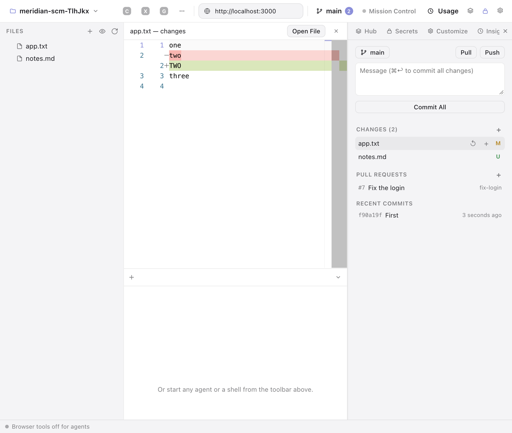
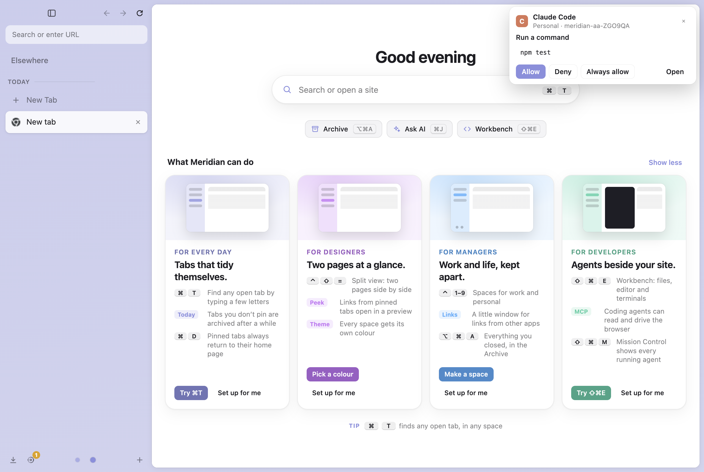
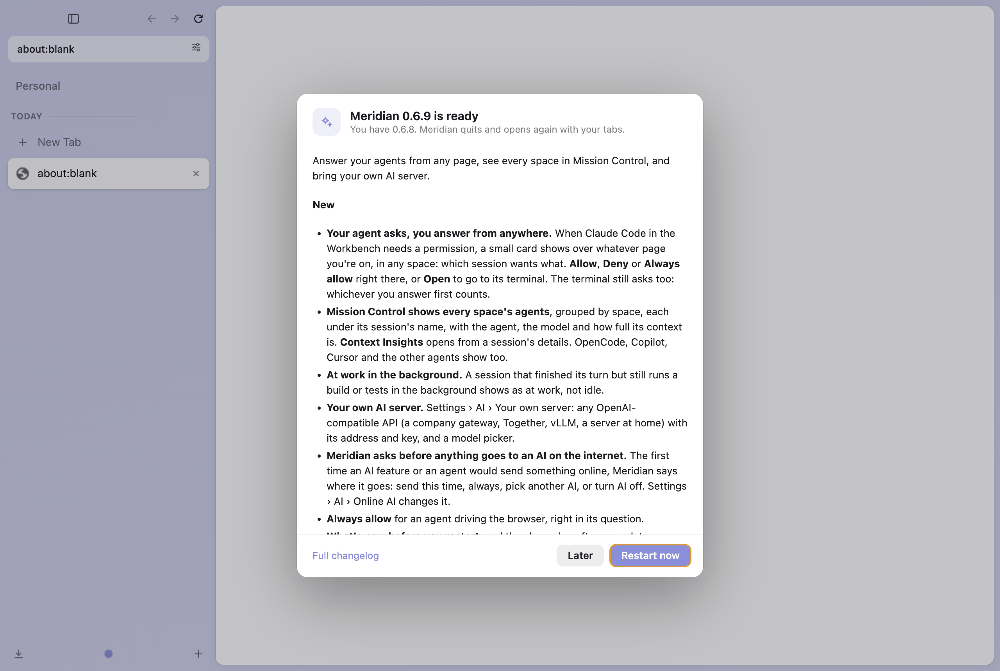

Answers right in the command bar.
Sums, units, currencies, times
Type 2+2*3, 15% of 240, 5 km in miles, 100 f to c, 100 usd in eur or time in tokyo in ⌘T and the answer shows above the suggestions; Return copies it. Currencies use the European Central Bank's rate of the day, fetched the first time you ask, at most once a day, without cookies. A number or a word on its own is still a search.
0.6.16
November 21, 2026Claude Code on your own Claude plan answers ⌘J and Ask.
Claude Code, your plan
Settings › AI now offers Claude Code: ⌘J and Ask answer through the Claude Code you installed and signed in to yourself, on your Pro or Max plan, with no API key. Meridian starts it with every tool off, so it only answers, and never touches its sign-in. If it isn't signed in, Ask says to run claude in Terminal once. Works on macOS and Windows.
Updates show up sooner
Meridian looks for a new version every 20 minutes instead of every hour. On Windows, coding-agent CLIs that need a sandbox say "macOS only for now" in Settings › AI instead of answering nothing.
0.6.15
November 21, 2026OpenCode answers Ask again, and what Ask says can be copied.
Fixed
With an OpenCode version that doesn't know the --dir flag, Ask showed "Unrecognized flag: --dir" instead of an answer: any OpenCode version works now. Questions, answers and errors in the Ask panel can be selected and copied.
0.6.14
November 20, 2026Meridian comes back after a crash, and Claude Code keeps working through one.
Back after a crash
If Meridian ever crashes, it opens again by itself in a couple of seconds, with your tabs. Not after you quit it, and not again and again if something is badly wrong. Two crashes that happened while agents worked in the browser are fixed.
Claude Code keeps working through a crash
On macOS, Claude Code sessions in the Workbench no longer end when Meridian crashes: they go on working, and when Meridian is back, the Workbench shows the same session with what it did meanwhile. Agents that use Meridian's browser tools from outside wait for it to come back instead of failing.
Connect Claude Desktop
Settings › AI › Connect now has Claude Desktop next to Claude Code and Codex: one click adds Meridian's browser tools to Claude Desktop. Your other settings stay, and a copy of the old file is kept.
Agents pick from dropdowns
Agents can now choose options in the drop-down lists sites use for filters, countries, categories and so on. An agent asked to open a local file gets a clear answer that it can open only web pages, instead of a broken tab.
Straight to the newest version
If a newer version comes out while one is already downloaded, Meridian gets the newest one instead of installing them one by one.
0.6.13
November 20, 2026Smaller updates, and agents keep working when Meridian isn't in front.
Smaller updates
Meridian now downloads only what changed since the version you have: about 37 MB instead of 200 MB. If anything doesn't match, it downloads the whole app as before. The update to 0.6.13 itself is still the full one; the next one is small.
Agents keep working in the background
While an agent works in a tab, the page draws as if you were looking at it, even in a background tab or with Meridian covered by another app or minimized: lists, dialogs and date pickers load, and the agent's screenshots work. The tab you're on doesn't change.
0.6.12
November 20, 2026git in the Workbench, and site searches work in the command bar again.
Source Control in the Workbench
The branch and the number of changes sit in the top bar. The panel lists the changed files; a click shows the diff side by side. Stage, unstage or discard, commit with a message, switch or create a branch, pull and push, and see the recent commits. With the GitHub CLI installed, see the pull requests and create one.

Fixed
- Site searches (yours, or the ones that came from Arc or Chrome) work in the command bar again: "kiwi pear" searches the site "kiwi" is for, not Google.
0.6.11
November 19, 2026Move in from Google Chrome: bookmarks, open tabs, sign-ins, passwords, history and extensions, a space per Chrome profile.
Import from Google Chrome
File › Import from Chrome… (and the welcome tour, when Arc isn't on your computer). Each Chrome profile becomes a space with its name from Chrome: its bookmarks become pinned tabs and folders, the tabs you had open come over as Today tabs that load only when you open them. Chrome's other profiles get Meridian profiles of their own.
- Along with it: sign-ins, saved passwords and cards, history, form entries, addresses, site permissions, site searches, sites' data and Chrome Web Store extensions. Nothing leaves your computer, and Chrome stays as it is.
- On Windows, Chrome locks its sign-ins to itself, so you sign in to your sites once more there; passwords and cards come over all the same.
0.6.10
November 19, 2026Agents no longer get stuck on a tab in the background, page dialogs are theirs to answer, and Claude Code started in a shell tab is a full Claude Code tab.
Agents answer the page's own dialogs
When a page shows an alert, a confirm, a prompt or "Leave site?", an agent sees it and answers it with the new handle_dialog tool. In "Ask before acting" mode you confirm it first; permission prompts, file pickers and sign-in dialogs stay yours.
Claude Code in a shell tab
Typing claude in a Workbench shell tab (your own alias too) gives it what a Claude Code tab gets: its name and context on the tab, Context Insights, Mission Control, the permission card, and it comes back after a restart in its permission mode. macOS for now.
- Terminal tabs move with a drag.
Fixed
- An agent's calls into a tab in the background could hang for many minutes, and every other tool waited too. Now the tab an agent works in stays awake, a page that doesn't answer is an error after 20 seconds, and calls no longer wait in line.
0.6.9
November 19, 2026Answer your agents from any page, see every space in Mission Control, and bring your own AI server.
Your agent asks, you answer from anywhere
When Claude Code in the Workbench needs a permission, a small card shows over whatever page you're on, in any space: which session wants what. Allow, Deny or Always allow right there, or Open to go to its terminal.
- The terminal still asks too: whichever you answer first counts, and the card goes away.

Mission Control: every space, every session by name
Agents from every space show in one Mission Control, grouped under their space. Each session shows under the name on its Workbench tab (Claude Code's session name, or one you gave it), with the agent and model below and how full its context is.
- A chip per space shows only that space's agents; Meridian remembers your choice.
- Context Insights opens from a session's details.
- OpenCode, Copilot, Cursor and the other agents show too.
- A session that finished its turn but still runs a build or tests in the background shows as at work, not idle.

What's new, before you restart
Restart to update now shows the new version's notes first, with Later and Restart now. After an update, this page opens at the new version.

Your own AI server, and a question before anything goes online
Settings › AI › Your own server takes any OpenAI-compatible API (a company gateway, Together, vLLM, a server at home) with its address and key, and offers its models. The first time an AI feature or an agent would send something to an AI on the internet, Meridian says where it goes: send this time, always, pick another AI, or turn AI off.
- Always allow for an agent driving the browser, right in its question.
- Meridian checks for updates every hour and when your Mac wakes.
Every agent fits the Workbench's top bar
On a small screen the agents that don't fit go into a More menu at the end of the bar, so each one is a click away.
Fixed
- A crash when Google Lens searched a page or a PDF. The other features of Chromium that looked for Chrome's own toolbar (reading mode, media casting, cut/copy/paste from menus and more) no longer crash either.
- Crashes in sharing, offers, side panels and reading mode in a background tab. Meridian's tests now run every menu item and every browser command.
- The context gauge on a Workbench terminal tab slid down when the context reached 70%.
- The Workbench's icon was a grey square in the sidebar on the Mac.
- Mission Control showed only one space's sessions, all called "Claude Code".
0.6.8
November 18, 2026Claude Code tabs come back in the permission mode they were in.
- A Claude Code tab that comes back after a restart keeps its permission mode: bypass stays bypass, accept edits stays accept edits.
0.6.7
November 18, 2026Claude Code tabs come back after a restart; fewer crashes.
Your Claude Code sessions survive an update
Each Claude Code tab in the Workbench opens again where it left off (claude --resume), in the same order and with its name. A tab you closed yourself stays closed.
Fixed
- Crashes on Save address, sending a tab to your devices, sharing, downloads, signing in and the screen reader.
- Crashes when a space's tab had another profile than its window.
- A link that arrived while Meridian was starting was lost.
0.6.6
November 18, 2026Context Insights, splits as in Arc, and the Little window in your space.
Context Insights for Claude Code
See what a session's context holds and where the tokens went: the system prompt, tools, MCP, skills, memory files and messages, how the context grew, and when the prompt cache went cold. Every Claude tab shows how full its context is, and the Workbench's top bar shows your 5-hour and weekly limits. All of it is read on your computer.

- Splits as in Arc: drop a Today tab on the middle of another to split them; drag a half out to undo.
- The Little window opens in your last space, with its profile and logins (macOS).
- A terminal tab takes the Claude Code session's name; double-click to rename it.
0.6.5
November 17, 2026Boosts work like Arc's.
- A Boost editor like Arc's: a colour pad, a grid of fonts, size, case, dark mode and your own code.
- Zap like Arc's: hide one element or all like it, each with its own Undo.
0.6.4
November 17, 2026Boosts, agents that can upload files, and fixes.
- Boosts: change a site's colours and font, Zap parts of a page, add your own CSS and JavaScript; Improve with Claude writes a boost from what you ask; Arc's boosts come over.
- Agents can upload files to a site, with Ask, Always or Never per site.
- Picture in picture with Arc's bar.
Fixed
- "Search Image with Google" crashed the browser.
- Tabs come back after a crash, as after quitting.
0.6.3
November 16, 2026- Meridian's shortcuts work over any page, even editors that take every key.
- Picture in picture as in Arc; "Copied link" shows briefly.
0.6.2
November 15, 2026- Drag the sidebar's edge to resize it; rename any tab with a double click.
0.6.1
November 15, 2026- The command bar finds Settings: type
ai,theme,block ads…
0.6.0
November 15, 2026The first Meridian for Windows, and a big update on the Mac.
- Meridian for Windows, with Arc import.
- Full screen like Arc, DevTools inside the window, H.264 video.
- The rest of Arc comes over: history, form entries, cards, site permissions, the archive, passwords and extensions.
Older versions are on GitHub.